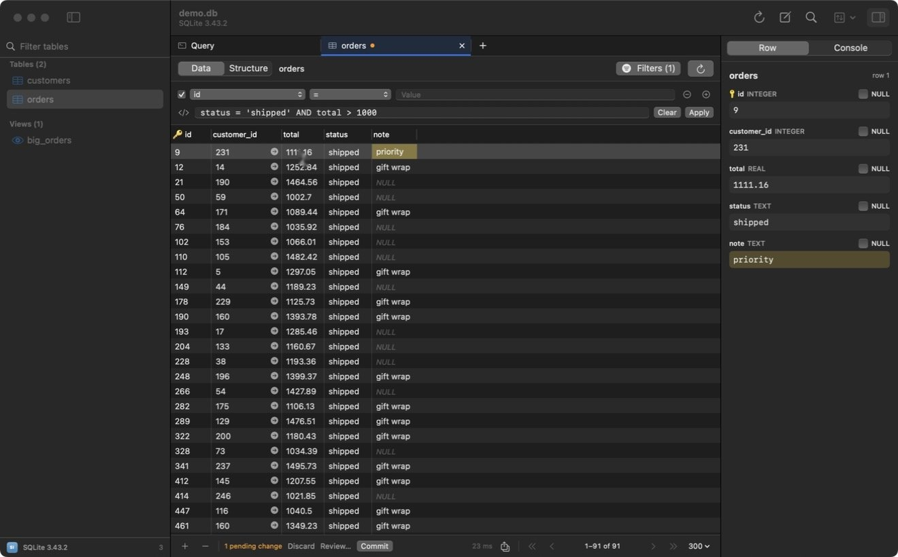
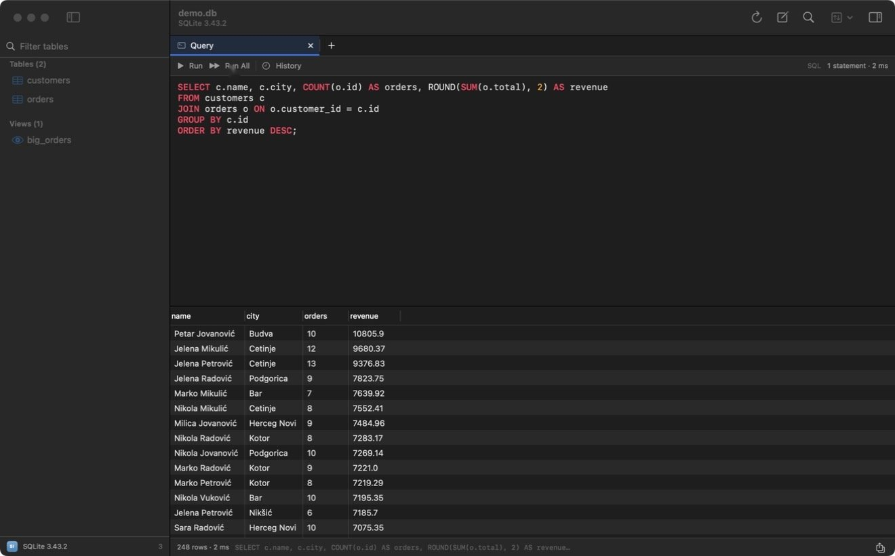
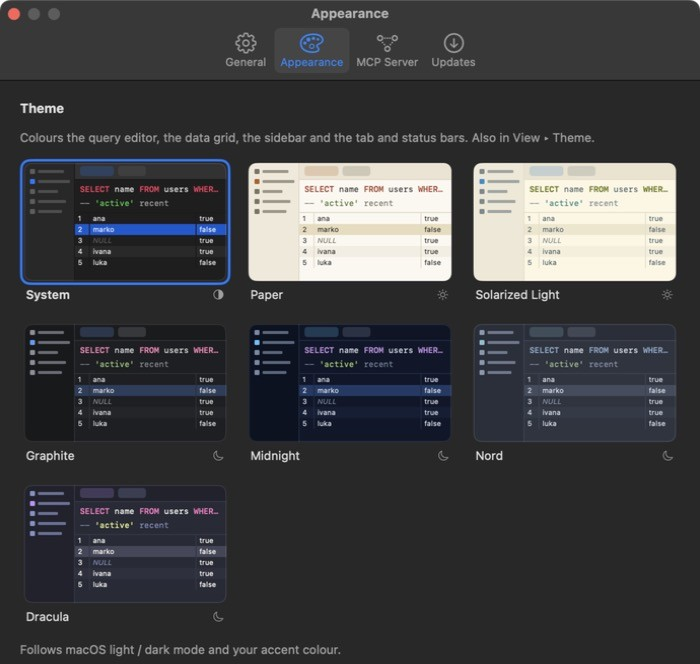
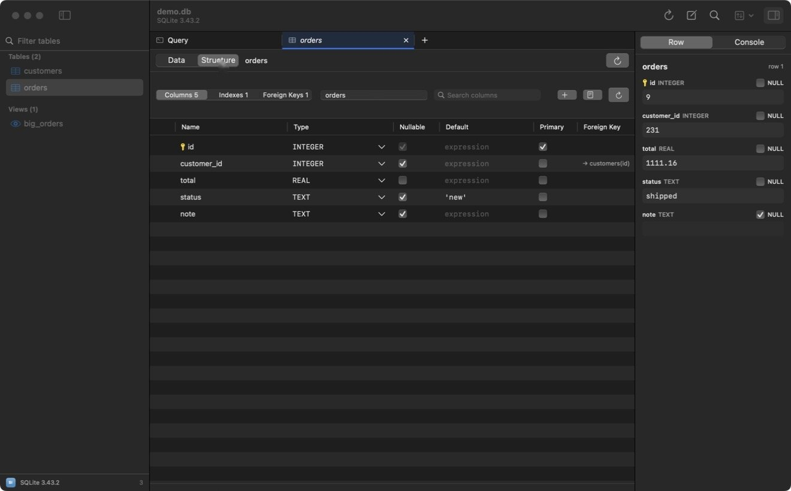
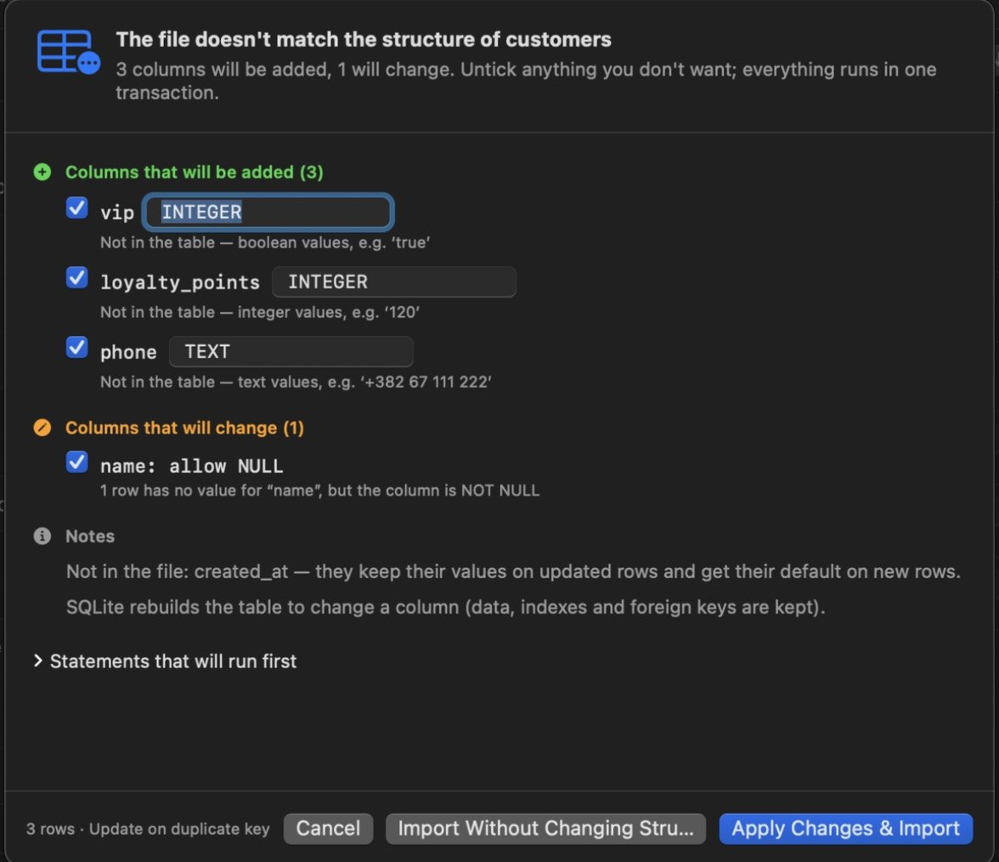
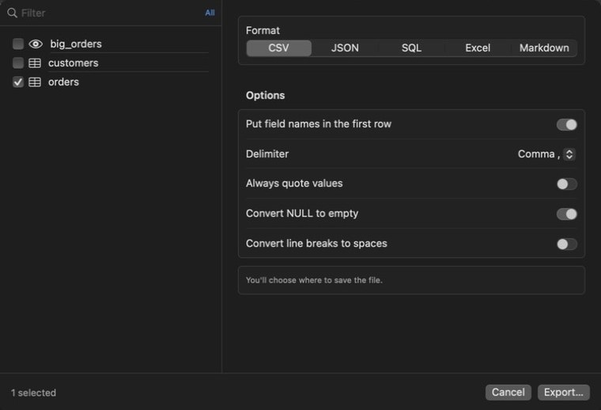
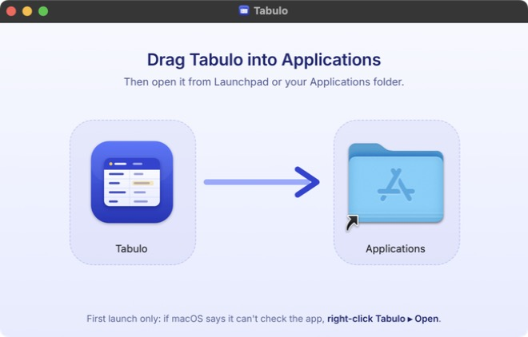

A query editor that speaks each engine's language
Highlighting, autocomplete of tables and columns, and a history for each connection. ⌘↵ runs the statement under the cursor, ⇧⌘↵ runs them all.
Tabulo is a native Mac client for PostgreSQL, MySQL, SQLite, Redis, MongoDB and Elasticsearch. Every edit waits in the grid until you have seen the exact statements it will run.
| id | customer_id | total | status | note |
|---|
Click a total, status or note to change it. Click an id to delete the row.

orders table, filtered to shipped orders over 1000. The yellow note is an edit that hasn't been written yet. The panel on the right shows every field of the selected row.Each engine keeps its own query language. Filters, the review step and the keyboard shortcuts work the same way in all of them.
| Engine | You query it with | Transactions | Worth knowing |
|---|---|---|---|
| PostgreSQL | SQL | Yes | Schemas, views, foreign keys, SSL, full structure editing. |
| MySQL, MariaDB | SQL | Yes, on InnoDB | One database or all of them. Structure changes run as one ALTER TABLE. |
| SQLite | SQL | Yes | Open any file. Structure changes use the safe table rebuild. |
| Redis | Commands, one per line | No | Keys by database, every type in the grid. |
| MongoDB | Shell syntax | No | Fields inferred from documents. ObjectId and ISODate work in cells and filters. |
| Elasticsearch | Dev Tools requests, SQL | No | The mapping becomes columns. Documents are editable. |
Highlighting, autocomplete of tables and columns, and a history for each connection. ⌘↵ runs the statement under the cursor, ⇧⌘↵ runs them all.

Paper, Solarized Light, Graphite, Midnight, Nord and Dracula recolour the editor, the grid and the window together. System keeps the standard macOS look. Pick one in Settings ▸ Appearance or View ▸ Theme.

Rename columns, change types and defaults, add indexes and foreign keys. Tabulo writes the DDL, shows it, and runs it in one transaction. On SQLite it does the table rebuild and keeps your data.

Map CSV or JSON columns to the table, then insert, update rows that already exist, or skip them. If the file doesn't fit, you get a list of every column Tabulo would add or change, and why, before anything runs.

CSV, JSON, SQL, Excel or Markdown. Export every row or only what the current filter shows. Several tables go into one SQL file, one workbook, or a folder.

Tabulo includes an MCP server, so Claude Desktop, Claude Code, Cursor and other MCP apps can list tables, read rows and run queries. Set each connection to Off, Read only or Read & write. Passwords stay in your Keychain.
# Add Tabulo to Claude Code
claude mcp add tabulo --scope user -- \
/Applications/Tabulo.app/Contents/MacOS/Tabulo --mcp
# Tools it gets
list_connections list_tables describe_table
get_rows run_query
execute_statement # Read & write connections onlyAbout 12 MB. Needs macOS 14 Sonoma or later on Apple silicon.
The disk image window shows you where. Then eject it.
Only needed once, until Tabulo is signed with an Apple Developer ID.
When a new version is out, Tabulo shows what changed and lets you install it, skip it, or be reminded later.
Download for Mac